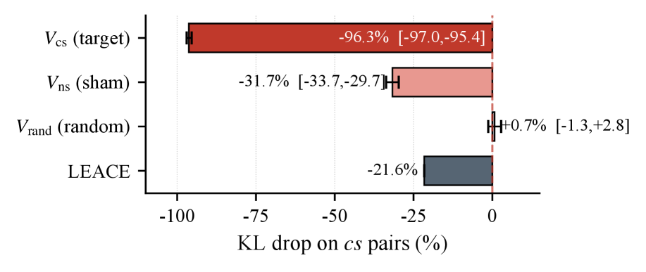

This paper reveals that LLMs can internally encode correct causal direction even when their Yes/No outputs are wrong, challenging the validity of output-only causal benchmarks.
本文揭示了LLMs在隐藏状态中能正确编码因果方向，即便其是非输出与之矛盾。通过线性探针从隐藏状态中提取信息，准确率可达约0.97，而模型口头输出仅接近随机水平（约0.50），这一“因果性舌结”现象挑战了仅依赖输出评估因果推理能力的基准测试的有效性。
Deep Note — causal-tongue-tie
Key Takeaways - LLMs can encode the correct causal direction in their hidden states even when their Yes/No output contradicts it. - On anti-commonsense CLadder items, a linear probe achieves ~0.97 accuracy from hidden states, while the model's verbal output is near chance (~0.50). - This 'Causal Tongue-Tie' gap (~+0.5) reveals a failure mode where the model 'knows' but cannot say, distinct from lacking causal knowledge. - Output-only causal benchmarks conflate two distinct failure modes: hidden state knows vs. hidden state does not know, undermining sweeping claims about LLM causal reasoning.
0) Metadata
- Title: Causal Tongue-Tie: LLMs Can Encode Causal Direction, But Their Yes/No Outputs Fail to Express
- Alias: causal-tongue-tie
- Authors: Ziyi Ding, Xiao-Ping Zhang
- arXiv ID: 2605.25891
- Published:
- Links:
- Abs: https://arxiv.org/abs/2605.25891
- HTML: https://arxiv.org/html/2605.25891v1
- PDF: https://arxiv.org/pdf/2605.25891
- Tags: causal-reasoning, hidden-state-probing, llm-evaluation, benchmark-limitations, tongue-tie
- Domains: ai_safety, system_safety
- Rating: 5/5 (base 1 + quality 2 + observation 2)
1) Why-read
This paper reveals that LLMs can internally encode correct causal direction even when their Yes/No outputs are wrong, challenging the validity of output-only causal benchmarks.
2) CRGP
C — Context
Debate persists on whether LLMs genuinely reason causally or merely produce fluent causal language. Benchmarks like CLadder and CounterBench score models solely on Yes/No accuracy, while probe studies give mixed evidence about hidden states. Prior work has not systematically paired hidden-state readouts with verbal outputs on causal tasks.
R — Related work
- Contrast-Consistent Search (Burns et al., 2023) and inference-time intervention methods show hidden states can contain information not expressed in text.
- Causal Parrots (Zečević et al., 2023) warns that fluent causal language may not reflect causal reasoning.
- Causal benchmarks (CLadder, CounterBench) operationalize causal reasoning via output-side accuracy alone.
- Chain-of-thought faithfulness work (Lanham et al., 2023; Turpin et al., 2023) shows explanations can be poor witnesses to actual computation.
G — Gap
Output-only causal benchmarks cannot distinguish between a model lacking causal knowledge and a model that has the knowledge but fails to express it in its verbal answer. This conflation hides a critical failure mode where the hidden state encodes the correct answer while the spoken output reverts to commonsense.
P — Proposal
The paper introduces 'Causal Tongue-Tie' as a measurable dissociation: on anti-commonsense CLadder items, a linear probe on hidden states recovers the evidence-aligned answer (~0.97 accuracy) while the model's Yes/No output remains near chance (~0.50). The authors propose a 2x2 framework (internal signal vs. external answer) to categorize wrong answers into four cells, with Causal Tongue-Tie occupying the off-diagonal cell where internal signal exists but external answer contradicts it.
---
4) Experiments
Main results
On anti-commonsense CLadder items, a fixed linear probe trained on commonsense items achieves ~0.97 accuracy from hidden states, while the model's verbal Yes/No accuracy is ~0.50, yielding a gap of ~+0.5. The probe is trained on cs items only and frozen; controls include sham subspace (nonsense items) and random-direction baselines.
Ablation
The gap persists across different probe shapes (logistic regression, counterfactual subspace via truncated SVD with k in {1,2,4}, and simple mean of hidden-state differences), ruling out probe architecture as the cause.
Limitations
['The study focuses on a single dataset (CLadder) and a single model family (Qwen2.5-7B); generalizability to other models and causal reasoning tasks is not established.', 'The linear probe is a simplified readout; the exact mechanism by which the hidden state encodes causal direction remains unclear.', 'The paper does not propose a method to fix the tongue-tie, only to diagnose it.']
5) Why it matters
- For researchers using output-only benchmarks, this work shows that a 'correct' answer does not guarantee understanding, and a 'wrong' answer does not guarantee lack of knowledge.
- It provides a concrete measurement protocol (paired probe vs. output) to separate internal knowledge from verbal expression, useful for diagnosing model capabilities.
- The 2x2 framework offers a more nuanced taxonomy of model failures, relevant for safety evaluations where hidden knowledge might be overridden by surface biases.
6) Next steps
- [ ] Apply the paired probe-output protocol to other causal benchmarks (e.g., CounterBench) and other model families (e.g., Llama, GPT) to test generalizability.
- [ ] Investigate whether chain-of-thought or other decoding strategies can bridge the gap between hidden-state knowledge and verbal output.
- [ ] Explore training interventions (e.g., contrastive learning or representation editing) to align the verbal output with the hidden-state signal.
- [ ] Extend the 2x2 framework to other reasoning domains (e.g., math, common sense) where hidden-state vs. output dissociations may occur.
7) Scoring
5/5 = base 1 + quality 2 + observation 2
因果性舌结：大语言模型能编码因果方向，但其是非输出却无法表达
主要结论 - LLMs能在隐藏状态中编码正确的因果方向，即使其是非输出与之相矛盾。 - 在反常识CLadder项目上，线性探针从隐藏状态中达到约0.97的准确率，而模型口头输出仅约0.50。 - 这种“因果性舌结”差距（约+0.5）揭示了一种模型“知道但说不出”的失败模式，区别于缺乏因果知识。 - 仅依赖输出的因果基准测试混淆了两种不同的失败模式：隐藏状态知道 vs. 隐藏状态不知道，削弱了对LLM因果推理能力的笼统论断。
1) 阅读理由
本文揭示了LLMs能在隐藏状态中编码正确的因果方向，即使其是非输出是错误的，从而挑战了仅依赖输出评估因果推理能力的基准测试的有效性。
2) CRGP（背景 / 相关工作 / 差距 / 方案）
背景：关于LLMs是否真正进行因果推理还是仅仅生成流畅的因果语言，一直存在争论。CLadder和CounterBench等基准测试仅根据是非准确率评分模型，而探针研究对隐藏状态给出了混合证据。先前的工作尚未系统地将隐藏状态读出与因果任务上的口头输出配对。
相关工作：对比一致性搜索（Burns等人，2023）和推理时干预方法表明隐藏状态可能包含未在文本中表达的信息；因果鹦鹉（Zečević等人，2023）警告流畅的因果语言可能不反映因果推理；因果基准测试（CLadder, CounterBench）仅通过输出侧准确率来操作化因果推理；思维链忠实性工作（Lanham等人，2023；Turpin等人，2023）表明解释可能无法忠实反映实际计算。
差距：仅依赖输出的因果基准测试无法区分模型缺乏因果知识和模型拥有知识但无法在口头答案中表达这两种情况。这种混淆掩盖了一种关键失败模式：隐藏状态编码了正确答案，而口头输出却回归常识。
提案：本文引入“因果性舌结”作为一种可测量的分离：在反常识CLadder项目上，隐藏状态的线性探针恢复证据对齐的答案（约0.97准确率），而模型的是非输出仍接近随机（约0.50）。作者提出了一个2x2框架（内部信号 vs. 外部答案）将错误答案分为四个单元格，其中因果性舌结占据非对角单元格，即内部信号存在但外部答案与之矛盾。
3) 实验
在反常识CLadder项目上，一个在常识项目上训练并冻结的固定线性探针从隐藏状态中达到约0.97的准确率，而模型的是非口头准确率约为0.50，产生了约+0.5的差距。探针仅在常识项目上训练并冻结；控制实验包括虚假子空间（无意义项目）和随机方向基线。
消融实验
该差距在不同探针形状（逻辑回归、通过截断SVD（k∈{1,2,4}）的反事实子空间、以及隐藏状态差异的简单均值）下持续存在，排除了探针架构作为原因。
局限性
['本研究仅关注单个数据集（CLadder）和单个模型系列（Qwen2.5-7B）；尚未建立对其他模型和因果推理任务的泛化性。', '线性探针是一种简化的读出方式；隐藏状态编码因果方向的确切机制仍不清楚。', '本文未提出修复舌结的方法，仅提出了诊断方法。']
4) 重要性
- 对于使用仅输出基准测试的研究人员，这项工作表明“正确”答案并不保证理解，“错误”答案也不保证缺乏知识。
- 它提供了一种具体的测量协议（配对探针与输出）来分离内部知识与口头表达，有助于诊断模型能力。
- 2x2框架提供了更细致的模型失败分类，对于安全评估中隐藏知识可能被表面偏差覆盖的情况具有相关性。
5) 下一步
- [ ] 将配对探针-输出协议应用于其他因果基准测试（如CounterBench）和其他模型系列（如Llama, GPT）以测试泛化性。
- [ ] 研究思维链或其他解码策略是否能弥合隐藏状态知识与口头输出之间的差距。
- [ ] 探索训练干预（如对比学习或表示编辑）以使口头输出与隐藏状态信号对齐。
- [ ] 将2x2框架扩展到其他推理领域（如数学、常识），其中可能发生隐藏状态与输出的分离。
![Figure 3: Anti-commonsense CLadder accuracy across Qwen2.5
instruction-tuned model sizes (log-scale x-axis, 0.5 0.5 B– 72 72 B). The
hidden-state readout ( Probe accuracy, best layer , deep teal) is
already 0.969 0.969 on Qwen2.5-0.5B and reaches 1.000 1.000 on Qwen2.5-72B-NF4,
while ordinary Yes/No accuracy ( Output accuracy (lm_head) , warm
coral) stays in [ 0.350 , 0.525 ] [0.350,0.525] ; the gap Δ ≈ + 0.5 \Delta\!\approx\!+0.5 does
not close with model size. Shaded ribbons are 95 % 95\% confidence
intervals on the N = 80 N{=}80 anti-commonsense prompts; chance marks 0.5 0.5 binary-task accuracy. Cross-family replication on
Mistral-7B-Instruct-v0.3 and
DeepSeek-LLM-7B-Chat is reported in Appendix ˜ F .](figures/1311/fig_002.png)
![Figure 7: Token-level selected-token entropy ( × ln 2 {\times}\ln 2 ) for Yes/No
vs. A/B-edge interfaces across three instruction-tuned models
( N = 80 N{=}80 anti-CS items each).
Accuracy values are annotated above each bar.
A/B-edge entropy is far below Yes/No entropy for every model, while
A/B accuracy is near 1.0 1.0 —a token-level signature of
interface-side commitment failure: the model’s internal causal direction
signal (probe Acc ≥ 0.94 \geq 0.94 ) is expressed at near-zero entropy in the
A/B register but is overwhelmed by a confident wrong commit in the
Yes/No register.](figures/1311/fig_006.png)
![Figure 8: Surface-form robustness across four forced-choice answer slots
(Qwen2.5-7B-Instruct, N = 80 N{=}80 anti-CS items).
Bars show output accuracy with 95% bootstrap CI; the solid green line marks
probe accuracy ( 0.97 0.97 ); the dashed line marks chance ( 0.50 0.50 ).
Green arrows indicate the readout–output gap Δ \Delta for each form.
All four surface forms keep output accuracy below 0.40 0.40 and Δ ≥ + 0.595 \Delta\geq+0.595 , confirming the gap is not an artefact of the
Yes/No surface form.](figures/1311/fig_007.png)
